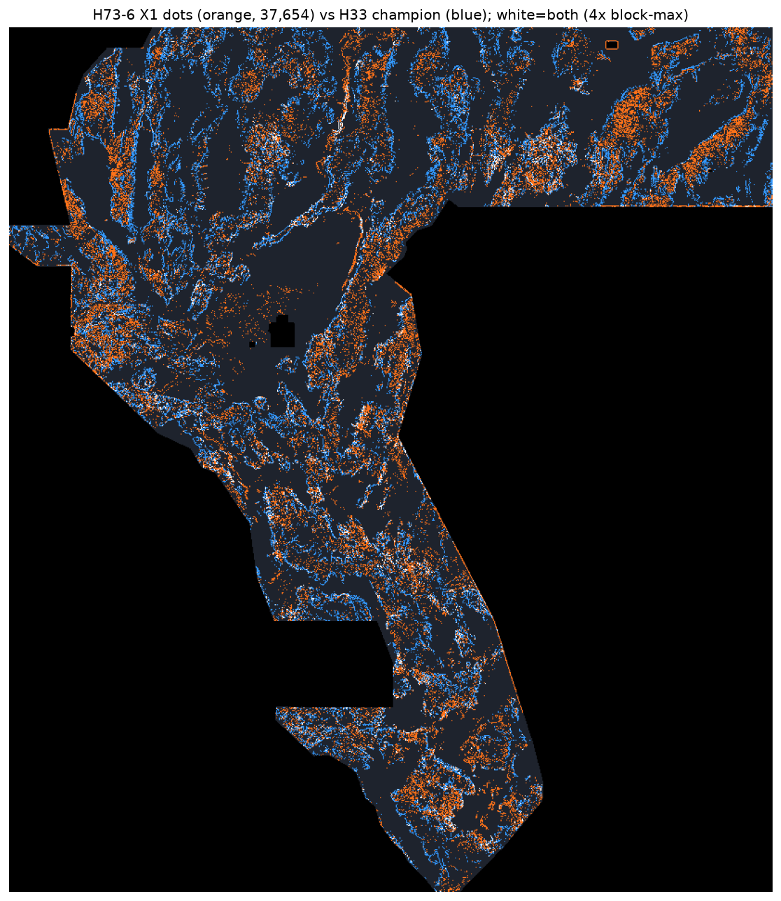

H73-6 — trace-localised, independently-corroborated scarps (session-2 lane)
One preregistered lane · 3 experiments (X1/X2/X3) · every number HOLDOUT-DTI or OWNER-REPORT · 0 weekly slots spent · no organiser score exists for this file.
⬇ ONE-CLICK DOWNLOAD — newest unique submission file (H73-6 X1) — READ THE STATUS FIRST
| File (all format-valid, portal-safe) | OK to download? | Recommended to submit? | Why |
|---|---|---|---|
NEW — H73-6 X1 tracelocgems73-h73-6-traceloc-x1-37654dots-20261021.tif | YES | NO — DO NOT SUBMIT | Unique + valid, but verdict NEGATIVE: HOLDOUT-DTI 0.0592 vs fold-fair control 0.0939 (gate failed). |
H73-1 E1 piedmont scarp-chaingems73-h73-1-piedmont-scarpchain-e1-37654dots-20261021.tif |
YES | NO — DO NOT SUBMIT | Session-1 NEGATIVE: HOLDOUT-DTI 0.0548 vs control 0.0939. See lane page. |
H73-F curvature lineament ridge (parallel session, PR #4)gems73-h73f-curvature-lineament-37654-20261021T040043Z-4acc39d2-zeros.tif |
REVIEW ONLY | NO — DO NOT SUBMIT | Format-valid (re-verified here) but holdout NOT RUN per its own run card (synthesis only). Uniqueness vs H73-6 X1: mutual 0.133, ρ 0.002 — distinct lane, still unvalidated. |
H73-A blind stepover (synthetic generator)gems73-h73a-blind-stepover-20261021T022620Z-c111bb0f-zeros.tif |
REVIEW ONLY | NO — DO NOT SUBMIT | Random-geometry synthetic dots, no real holdout (its own run card: verdict negative). Earlier revisions of this site wrongly labelled it “PRIMARY” — corrected 2026-10-21 (IR-73-10). |
Hydrothermal corridor (synthetic-demo holdout)gems73-hydro-permeability-corridor-37654-20261021T000000Z-2bbb79d4-zeros.tif |
REVIEW ONLY | NO — DO NOT SUBMIT | Its “holdout” was a hard-coded synthetic demo, now removed from the code (IR-73-11). No trustworthy score exists. |
Bottom line: no file in this repo is currently recommended for a weekly slot. Downloading any file is safe; submitting one spends a slot against this repo's own evidence and requires a human selector override. That separation is deliberate — it is how a slot is never wasted on an unvalidated idea.
⬇ Download gems73-h73-6-traceloc-x1-37654dots-20261021.tif .zip (single GeoTIFF inside) Run card (JSON)
Filename: gems73-h73-6-traceloc-x1-37654dots-20261021.tif
Unique submission name: gems73-h73-6-traceloc-x1-37654dots-20261021
Note for the DrivenData “Note (optional)” field (92/140 chars) — only if a selector overrides:
G73 H73-6 X1 traceloc NMS+UK/grav witness 37654 dots; HOLDOUT 0.0592 vs ctrl 0.0939 NEGATIVE
sha256: 2e6098900c9f7be25a8c2074bb24297c89947ed4dc0d79cf5931a1ab84946554 · 146,965 bytes · single band float32 · EPSG:32611 ·
100 m · 3730×3292 · 37,654 dots · min 0.0 max 1.0 · 0 NaN in all 12,279,160 cells · no nodata tag ·
CRS/shape/transform match sample submission: True ·
(validator receipt)
This file is newly generated this session, is not a copy of any GEMSDOE-site raster (uniqueness vs H33 champion: forward overlap 0.199, surface ρ 0.042), and has never been submitted. It is OK to download. It is NOT recommended to submit (verdict above). No organiser score exists for it.
⚠ Portal error “Predicted values must be in range [0, 1]” — cause and fix
DrivenData requires every predicted value in [0,1] (official submission format,
problem page 967,
re-verified 2026-10-21). The usual trigger in this project family is the float32 sentinel
-3.4028234663852886e+38: training_features.tif uses it as nodata, and any pipeline
that writes it through (as data or as a nodata tag a validator reads as a value) fails the range check.
Fix applied to every file above: written all-finite with nodata=None and
0.0 outside the footprint, then re-opened from disk and checked cell-by-cell
(all 12,279,160 cells finite, min ≥ 0, max ≤ 1, 0 NaN) by the shared validator before delivery.
Each file ships its re-read receipt. If you ever see the error, you have picked a stale/sentinel file —
re-download the -zeros/all-finite file from this page.
Method (single paragraph — the lane)
Trace-localised, independently-corroborated scarps: polarity-weighted one-sided LiDAR step, ridge-thinned by orientation non-maximum suppression on its own structure tensor (soft factor 0.25 off-ridge), corroborated within 200 m (max-filter radius 2 px) by the stronger of a U/K radiometric gradient ridge and the isostatic-gravity slope ridge (factor 0.35+0.65*w), softly piedmont-weighted (factor 0.45+0.55*pied_soft). No catalogue/SGMC training, no distance-to-catalogue feature, no scored-raster input.
Named non-fault mimic: Linear infrastructure / land-use edges (roads, canals, field boundaries): narrow straight centrelines without a basement gravity step; secondary mimic Lahontan shoreline benches.
Holdout — primary instrument
HOLDOUT-DTI · evaluator gems57-pooled-hide-v2 · whole-component hide-and-recover,
fold-fair emission, visible faults masked pixel-exactly · 11,321 withheld px · α=0.2 β=0.8 300 m triangular
kernel · paired spatial-cluster bootstrap 95% CIs. Controls reproduce session-1 exactly (same folds/seeds).
| Arm | DTI | 95% CI |
|---|---|---|
| X1 full (NMS + witness) | 0.0592 | [0.0490, 0.0700] |
| X2 thinning only | 0.0578 | — |
| X3 witness only | 0.0585 | — |
| H33-analogue control (fold-fair) | 0.0939 | [0.0813, 0.1076] |
| Random control | 0.0484 | — |
| Session-1 E1 (same instrument, ref) | 0.0548 | [0.0417, 0.0688] |
X1 − control = -0.0347 [-0.0522, -0.0192] (gate FAILED); X1 − random = +0.0108 [+0.0001, +0.0222] (real but small signal). Leakage canaries: 20 channels, max symmetric AUC 0.611 ≤ 0.90 PASS. Report-only SGMC-piedmont proxy (never used for selection): X1 0.0883 vs champion 0.0980 — no override temptation this time. Reading: thinning (+0.0014 over the E3-style base) and corroboration (+0.0021) each help marginally and additively, but neither closes the gap to the tuned H19-5 geography. Negative results are deliverables.
Uniqueness vs accessible registry (16 rasters)
| Surface Spearman (pre-placement, 200k sample) | max 0.120 ≤ 0.90 ✓ |
|---|---|
| Final-dots Spearman (200k sample) | max 0.250 ≤ 0.90 ✓ |
| Mutual 3 px overlap | max 0.596 ≤ 0.70 ✓ (worst: session-1 H73-1 E1 — shared scarp/piedmont base, disclosed) |
| vs H33 champion | forward 0.199 · mutual 0.199 · surface ρ 0.042 |
| Literal forward overlap | Forward 0.994 only vs 206,895-dot r13 lattice (halo covers ~100% footprint; mutual 0.165) - IR-73-01. Vs session-1 H73-1 E1: forward 0.596 / reverse 0.693 / mutual 0.596 (shared scarp+piedmont base, disclosed; below 0.70 gate). |

Executive summary — exactly how to submit (and why not to submit this file) · Official sources · Five new hypotheses · Run card JSON